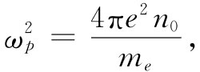

现在我们考虑某些物理情况，其中的电场，既不是由固定电荷也不是由导体表面上的电荷所确定，而是由两种物理现象的组合所确定。换句话说，场将同时由两组方程决定：（1）来自静电学的方程组，把电场与电荷的分布联系起来；以及（2）来自物理学另一分支的一个方程，确定场存在时电荷的位置或运动。
我们将要考虑的第一个例子是动力学的例子，其中电荷的运动由牛顿定律所支配。这种情况的一个简单例子发生在等离子体中，这是一种分布于某一空间区域内由离子和自由电子组成的电离气体。电离层——大气的较高一层——就是这种等离子体的一个例子。来自太阳的紫外线把空气分子内的一些电子撞击出来，从而产生了电子和离子。在这样的等离子体中，正离子比电子重得多，因而同电子的运动相比，离子的运动可以略去。
假定分子是被单一电离的，并令n0 为在不受干扰的平衡状态下电子的密度，则这也必然是正离子的密度，因为等离子体（在不受干扰时）是电中性的。现在假定不知什么缘故电子离开了平衡状态而运动，试问将会发生什么情况？如果在一个区域里，电子的密度增大，它们便将互相排斥而趋向于返回其平衡位置。当电子朝着原来位置运动时，它们将会获得动能，但不会在其平衡位置上静止下来，而是过了头。它们将来回振动。与在声波中发生的情况相似，那里的恢复力是气体的压强。在等离子体中，恢复力则是作用于电子上的电力。
图7-6 等离子体中波的运动。在a平面处的电子移动至a′，而在b处的电子则移动至b′
为了使讨论简单化，我们将只关心一维（例如沿x轴）运动。让我们假定原来位于x处的诸电子，在t时刻从它们的平衡位置上移动了一小段距离s（x，t）。由于电子已移了位，它们的密度一般将改变。密度的改变是容易算出的。参照图7-6，最初包含在a与b两平面间的电子，已经移动，现在则包含在a′与b′两个平面之间了。位于a与b间的电子数目正比于n0 Δx；这相同 数目的电子现在位于宽度为Δx+Δs的空间中，因此密度已经变成
如果密度的变化很小，便可以写成［利用对（1+∈）-1 的二项展开式］
假定正离子不发生显著移动（由于其大得多的惯性），因而它们的密度仍保持为n0 。每一电子所带的电荷为-qe ，因而在任一点的平均电荷密度就由下式给出：
ρ=-（n-n0 ）qe ，
或
（7.18）
式中，我们已把Δs/Δx写成微分形式。
电荷密度与电场的关系是通过麦克斯韦方程组，特别是
（7.19）
这个方程确定下来的。如果问题是属于一维的（并且倘若除来自电子位移的场外别无其他场），那么电场E只有一个分量Ex . 式（7.19）同（7.18）一起给出
由于当s=0时Ex =0，所以积分常数K为零。
作用于移了位的电子上的力为
（7.22）
这是一个正比于电子位移s的恢复力。它将会导致电子做谐振动。一个移了位的电子其运动方程为
我们发现s将做谐变化。s随时间的变化将按照cosωp t，或——应用第1卷的指数函数符号——按照
eiω pt . （7.24）
振动频率ωp 由方程式（7.23）确定，为
（7.25）
ωp 称为等离子体频率 。它是等离子体的一个特征数值。
在同电子的电荷打交道时，许多人喜欢用一个量e2 来表示他们的答案，该量定义为
应用这一惯例，式（7.25）变成
 （7.27）
这是你们将在大多数书中见到的一种形式。
这样，我们就发现，等离子体的扰动会引起电子在其平衡位置附近、固有频率为ωp的自由振荡。这固有频率与电子密度的平方根成正比。等离子体中电子的行为很像一个诸如在第1卷第23章中所描述过的那种共振系统。
等离子体的这种固有共振具有某些重要的效应。例如，如果有人试图把无线电波通过电离层传播出去，则他会发现只有当其频率高于等离子体频率时才能穿透，否则信号将被反射回来。要是我们希望同空间的人造卫星通信，就必须采用高频。反之，若想同地平线上远处的一个无线电台通信，则必须利用比等离子体频率低的频率，以便信号被反射回地面。
等离子体振荡的另一个有趣例子发生于金属内。金属里含有正离子的等离子体及自由电子。这里密度n0 十分高，因而ωp 也是这样，但仍应能观察到其中电子的振动。原来，按照量子力学，凡具有固有频率为ωp 的谐振子，都具有能量间隔为ћωp 的能级。因此，如果把一束电子射进比如一张铝箔，而在箔的另一面十分仔细地对电子能量进行测量，那么可以预料发现电子有时把能量ћωp 传给等离子体振荡。这件事情的确发生过。1936年第一次从实验上观测到：拥有几百至几千电子伏能量的电子从一薄金属膜散射或穿透出来时，会以跳跃的方式损失能量。这一效应从未弄明白，直到1953年博姆和派因斯 [1] 才证明这些观测结果可用金属中等离子体振荡的量子激发来解释。